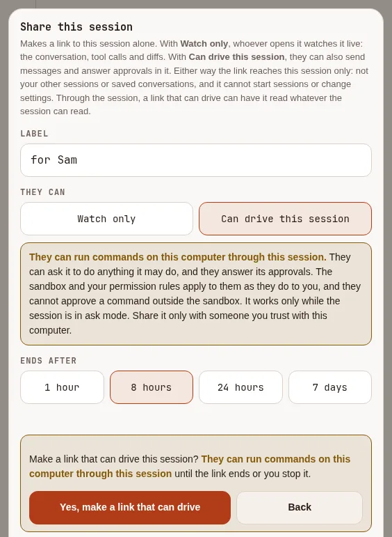
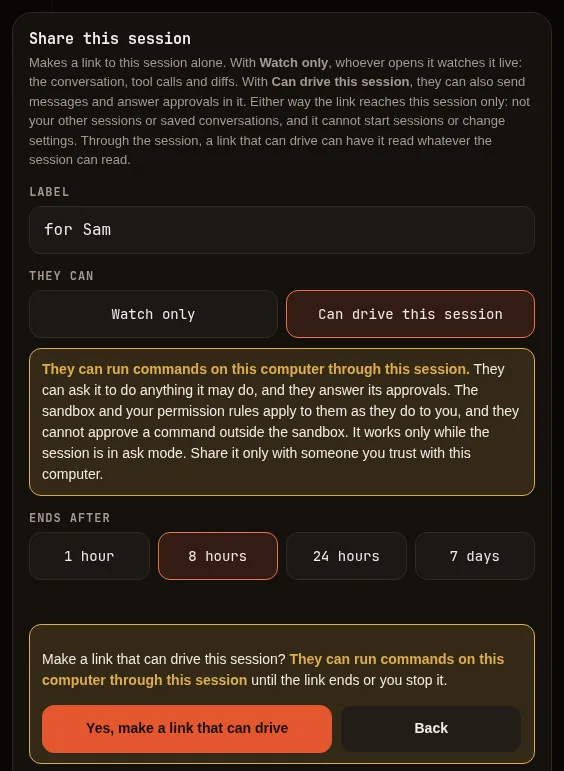
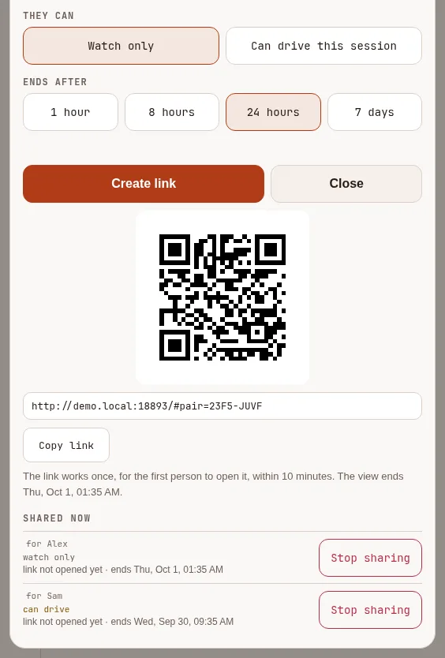
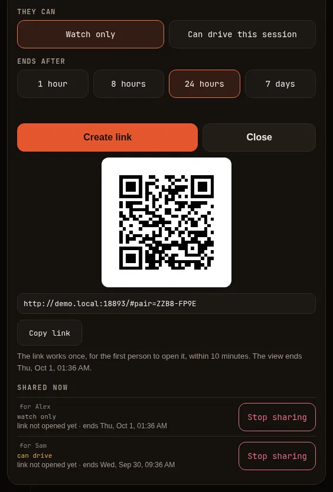
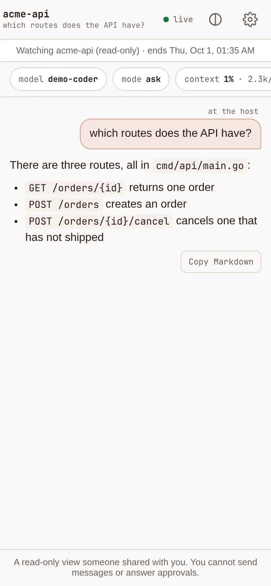
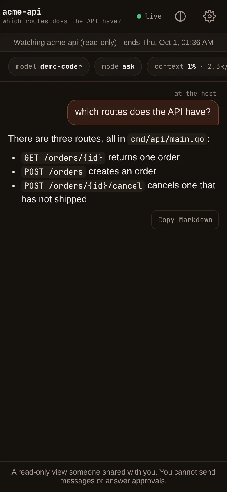

Control it from your phone #
On this page
Share a session and drive it from your phone's browser or from another machine. You can approve tool calls (with a look at exactly what will change), open several sessions in one list, and start new ones in folders you have allowed.
Recommended setup: Tailscale #
Put the computer and the phone on the same Tailscale network. Nothing is exposed to your local network or the internet, the traffic is already encrypted, and Tailscale can issue a real HTTPS certificate for your machine, which is what lets a phone show notifications with the page closed.
- Install Tailscale on the computer and on the phone, signed in to the same tailnet.
- In the Tailscale admin console under DNS, make sure MagicDNS is on and turn on HTTPS Certificates (how).
- On the computer, start the gateway and allow a folder the phone may work in:
maple-harness gateway start --workspace ~/codeIt prints a one-time pairing code, a QR code and an address like
https://my-computer.example:11541/, wheremy-computer.examplestands for this machine's Tailscale name. When Tailscale is signed in, it uses a Tailscale certificate for you. - On the phone, scan the QR code. It signs itself in. Open the address on your phone's Tailscale network, using the machine's Tailscale name (the certificate does not match a bare IP address).
- Add the page to your Home Screen (iPhone: Share, then Add to Home Screen), open the app from its icon, and sign in from inside it: tap Scan QR code or type the code. Then turn on notifications below.
Without Tailscale, the gateway serves a self-signed certificate on your local network. The phone warns once;
compare the certificate fingerprint it shows with the one printed on the computer (under the pairing code, and
in maple-harness gateway status) before you continue.
Everything works except notifications with the page closed, which browsers refuse on a self-signed
certificate. Never forward the port through your router to the internet.
Sharing a session #
Inside a running session, type:
/remote share this session
/remote pair phone --code make a one-time pairing code for a device
/remote status where it is, and who is paired
/remote off stop sharing this session/remote starts the gateway if it is not running. The gateway is the one address on your machine that
lists every shared session, so a phone sees them all. A session shared through it stays shared until you
turn it off or close the session. To start without any session open, use maple-harness gateway start.
Pairing starts the gateway too. maple-harness gateway pair and /remote pair start the gateway when none is
running, the same way gateway start does: on every network interface (your local network, and your Tailscale
network when Tailscale is up), with a Tailscale certificate when Tailscale is signed in (gateway pair) or a
self-signed one otherwise. When they start it, they print the address it listens on, who can reach it, its
certificate, and how to stop it:
maple-harness gateway stopIt also stops by itself after ten minutes with no sessions and no one connected. To pair only with a gateway that is
already running, add --no-start (or set MAPLE_GATEWAY_NO_START=1, for example in a script): with no gateway
running, the command stops with a message and makes nothing. gateway pair also takes --listen and --tls, as
gateway start does, for the gateway it starts; for example --listen 127.0.0.1:11541 keeps it on this machine.
If a gateway is already running somewhere else or with another certificate, gateway pair with those options stops
with a message instead of using it. --no-start never starts a gateway, but --via tailscale may still restart the
running one to switch its certificate.
A configuration folder under the system's temporary directory (a test or an experiment) never asks Tailscale for a
certificate by itself; pass --tls tailscale to ask.
Pairing #
A pairing code (eight characters like K7QM-4XPT) works once and expires after five minutes. The phone
trades it for a token of its own, which you can see and revoke in the device list on the setup page at
http://127.0.0.1:11539. Scan the QR code, open the link, or type the code.
Turning Remote control on in the setup page starts the gateway if it is not running and a device is already
paired, the same way /remote does (on every interface, on the port set there), and the page says whether it is
listening. It makes no pairing code. If it cannot start, or no device is paired yet, the switch stays on and the
page says how to start it yourself. To keep the proxy from starting it, set
MAPLE_GATEWAY_NO_START=1 in the proxy's environment. Turning the switch off does not stop a running gateway, but
it refuses every request while the switch is off. Adding a device there shows its QR code. To keep the gateway
running after you log in, use maple-harness service install gateway.
You can also make a token on the setup page and paste it into the phone. A token is a shell on this
machine: keep it private like an SSH key, prefer pairing codes, and revoke a lost phone at once. If you
want a long-lived token for direct login, maple-harness gateway pair --fixed makes one; store it in a
password manager.
Each device can be limited to some folders, so a phone can be allowed into one project and nowhere else. Such a
device sees, opens, starts and resumes only sessions whose folder is one of them: a conversation saved in another
folder stays out of its reach even if it asks to run it in an allowed folder, and so does a session running a
conversation that was saved in another folder. It cannot list your saved conversations with /sessions, since that
list covers every folder. Devices that are not limited to folders (the default) see and drive every session, as
before.
Watch-only devices. A device paired with --watch-only can follow sessions and get notifications, but it
cannot send messages, answer approvals, change the mode or model, run commands, or start and stop sessions:
maple-harness gateway pair wall-screen --watch-only
/remote pair tablet --watch-onlyApprovals show on it without buttons, to be answered at the computer or on a device that can approve. Devices paired before this option existed keep the access they have. The setup page does not offer the option yet. A watch-only device can turn on notifications in up to three browsers, and cannot take over notifications another paired device receives.
iPhone Home Screen app. An app added to the Home Screen keeps its own storage, separate from Safari, so a code or link you opened in Safari does not sign the app in. Open the app and sign in there: tap Scan QR code and point the camera at the code on your computer, or type the code. The camera only turns on when you tap the button, and it turns off as soon as a code is read. Scanning with the phone's own camera app still works and signs in the browser.
A device stays signed in until you sign out or revoke it. If the computer restarts or the network drops, the page says it is reconnecting and carries on; it does not sign you out. If a session's host itself restarted, the page says so and carries on with what the host has now; approvals that were waiting before are cancelled.
Sharing one session #
You can give someone a link to one session, and nothing else. On the remote page, open the session and tap Share (the arrow button at the top; a watch-only device does not have it). Give the share a label, such as who it is for, and choose what they can do:
- Watch only (the default): they follow the session live and can do nothing in it.
- Can drive this session: they can also send messages and answer approvals in that session. They can run commands on this computer through this session, so share it only with someone you trust with this computer. The sandbox and your permission rules apply to them as they do to you, and with the sandbox off, commands they approve run directly on this computer. The sheet says so and asks you to confirm before it makes the link. Only a session in ask mode can be shared this way: in auto and yolo mode tool calls run without anyone approving them. If the session is switched to auto or yolo later, the link can still watch but cannot send or answer until it is back in ask mode.


Pick when it ends (1 hour, 8 hours, 24 hours or 7 days; 24 hours for watch only and 8 hours for a link that can drive, unless you choose), and tap Create link. You get a QR code and a link to copy.


The link carries a one-time code, like a pairing code: the first person to open it, within 10 minutes, gets in, and it works for no one after that. Send it privately.
What the person who opens it sees: that session's conversation as it happens, the tool calls and their output, the changes proposed with their diffs, approval requests as they appear, and the model, mode and context use. They are not shown the session's folder or your account's quota and spend (though file paths can appear in the conversation itself). They can turn on notifications for that session in one browser.


With a link that can drive, they can also type messages to the session, stop the current turn, and answer its approvals with Allow or Deny, one at a time. Their messages and answers are labelled with the share's label and "(shared link)", so you can tell them apart from your own devices.
A person with such a link can have the session read or change whatever it can reach, so the link is only as narrow as the session. A link made from a device limited to some folders only works while the session runs in those folders. To keep one person from flooding the session, a link can send about 20 messages or answers a minute.
What neither kind can do: see or reach any other session, your folders or your saved sessions; start or stop
sessions; change the session's mode or model; run the session's text commands (such as /sessions or /clear);
pair a device or share further; answer "always allow"; or approve running a command outside the sandbox. The page
leaves these out and the gateway refuses them either way.
When the session stops and is resumed, the share follows it. A share is tied to that conversation, not to the name or the folder: after a stop and resume, and after the gateway restarts, it finds the same conversation again. While the session is not running, the view says so and waits. A new conversation is never shared by an old link, even one started in the same folder under the same name, and neither is a fork or a clone of the shared one.
Shares made with 1.12 keep working. The first time such a share reaches its session after you update, it is tied to that session's conversation, and from then on it follows only that conversation. It is only tied to a conversation that already existed when the share was made: a newer conversation saved under the same name is not shared.
Stopping a share. A share ends by itself when its time is up. Revoking the device that made it stops it too. To end it sooner:
- on the remote page, Share lists the session's shares under Shared now, each marked watch only or can drive, with Stop sharing;
- the device list on the setup page shows each share with what it can do, the session and when it ends, and Revoke ends it;
- from a terminal:
maple-harness gateway shares # every live share: its id, what it can do, when it ends
maple-harness gateway unshare <id> # stop one now- inside the session itself:
/remote share [label] [--for 1h|8h|24h|7d] make a watch-only link to this session (24h unless you choose)
/remote share [label] --drive make a link that can drive (8h unless you choose); it explains
what that allows and asks you to repeat it with --confirm
/remote shares this session's shares
/remote unshare <id> stop one nowA person whose share ends or is stopped is signed out at once, including a page left open.
Good to know:
- Opening the link in a browser that is already signed in to your remote page keeps your own sign-in and ignores the link. To try it yourself, use a private window or another browser.
- Sharing works through the gateway. A session served on its own port (
serve --direct) cannot be shared. - A session started by 1.12 or older cannot be shared: restart it first.
- Anyone with the link sees everything the session shows, including file contents and command output. Do not share a session that works with secrets.
- Each share made, opened, used and stopped is recorded, with its kind, in the audit log on your machine
(
maple-proxy audit tailshows it). - 1.12 and older refuse links that can drive: if you go back to an older version, those links stop working, and so do shares that were already tied to their conversation.
Starting sessions from the phone #
The New session sheet starts a session in a folder you have allowed:
maple-harness gateway workspaces add ~/code
maple-harness gateway workspaces listA phone can only start sessions in those folders, and never anywhere else. A folder inside one of them that does not exist yet, such as a new project, is created when the session starts. Resuming a saved session whose folder has been deleted is refused rather than given an empty folder.
Starting in yolo mode #
Yolo mode allows every tool call that would otherwise ask, without asking. Your deny rules still apply.
Because a stray tap on a phone is easy, starting a session as yolo from the phone is off until you turn
it on for the machine:
harness:
remote:
allow_yolo: true # or: maple-harness gateway --allow-yoloRestart the gateway after changing it. The sheet then offers Start in yolo mode, asks you to tap twice, and the session shows a YOLO badge for as long as it is in that mode.
Notifications #
Turn on Notify me when this session needs me in the session sheet. When the page is in the background you get a notification, a vibration and a count in the tab title when a session needs approval, stops with an error or finishes. It says only that, plus the project's name, never your commands or paths.
- With the page closed needs a real HTTPS certificate: use the Tailscale setup above. On iPhone the page must be added to the Home Screen (iOS 16.4 or later). Android works in Chrome.
- Without a trusted certificate (a self-signed one), notifications still work while the page is open in a browser that shows them from a page, which is usually a desktop browser; a phone may not.
- A test button in the sheet sends a notification to your phone so you can check it works.
- Other ways to be told:
maple-harnesscan send messages to ntfy, a webhook, or a desktop notification when a session needs you. Add aharness.notificationssection with asinks:list, or simplydesktop: true, then check withmaple-harness notify test.
Using the page #
- Replies render as Markdown as they stream: headings, lists, tables and code blocks. Code blocks and tables have Copy buttons, and each reply has Copy Markdown.
- Send with in the session sheet chooses the key that sends: Ctrl/Cmd+Enter (the default), Enter, Shift+Enter or a combination you record. The Send button always works.
- Approvals show the exact command or a diff of the file change before you allow it.
- Host commands. Type
/graph,/memory,/mcp,/jobs,/sessions,/compress,/clear,/effort,/thinkingor/planas you would in the terminal. The report appears in the conversation in the host's own layout and colours, with a Copy button; a wide table scrolls sideways on a phone instead of wrapping./helplists them. The model and permission mode are in the session sheet; other commands work in the terminal only. What a command prints is shown only on the device that ran it. - Light and dark themes follow your phone; a toggle overrides them.
Attach from another computer #
MAPLE_TOKEN=<token> maple-harness attach https://my-computer.example:11541If it does not work #
- The phone cannot reach the address. Check that both devices are on the same Tailscale network, or the same local network for the LAN address, and that a firewall is not blocking port 11541.
- Certificate warning on the Tailscale name. HTTPS certificates are not enabled for your tailnet yet; see step 2.
+ New sessionis refused. No folder is allowed yet:maple-harness gateway workspaces add <dir>.- Run
maple-harness doctor; it reports which certificate the gateway serves and what that means for notifications.
See also Security and Troubleshooting.